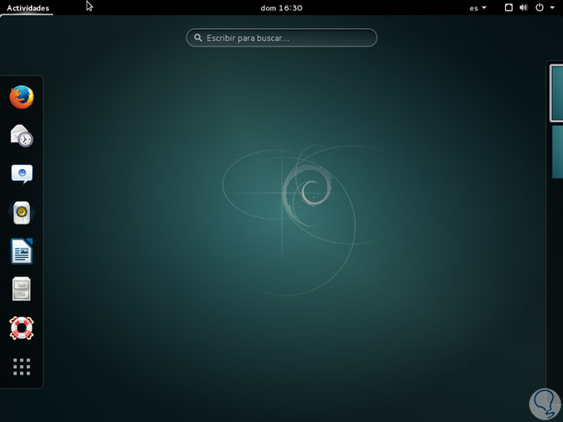
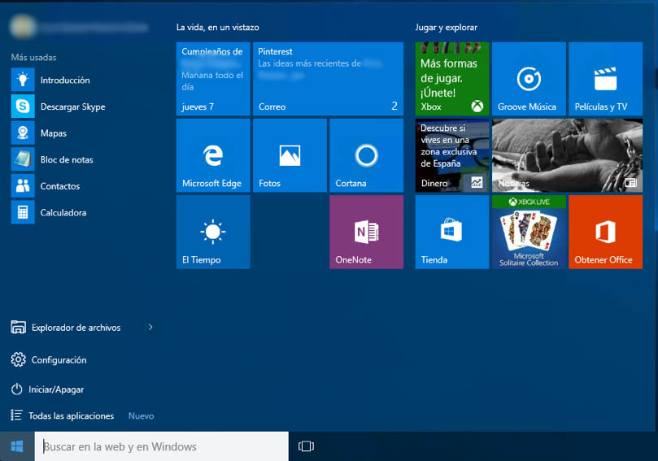
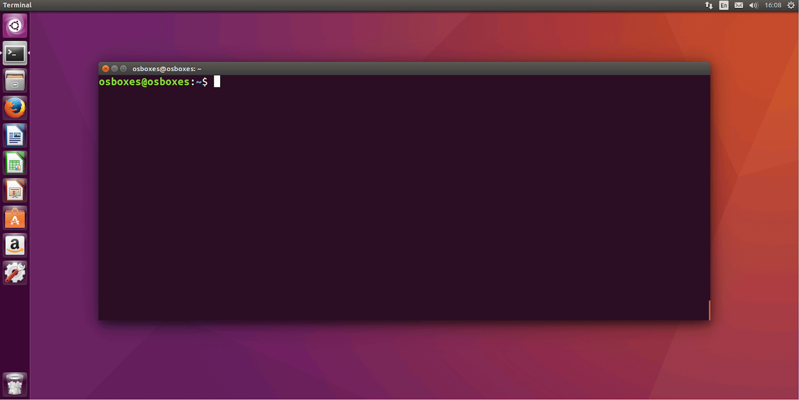

Terminal - CLI

Interfaz gráfica de usuario (gui)
Interfaz gráfica de usuario (gui)
¿Qué es Terminal - CLI?
La interfaz de línea de comandos, o CLI, por sus siglas en inglés (command-line interface) es un método de comunicación entre usuario y máquina que acepta instrucciones del usuario a través de líneas de texto (siguiendo unas determinadas reglas de sintaxis que puedan ser interpretadas por el sistema operativo).
Powershell
Linux terminal
VSC terminal
Git bash
Comandos básicos
| Directorio actual | pwd |
| Ver archivos y directorios | ls, ls-l |
| Crear directorios | mkdir |
| Mover y renombrar archivos y directorios | mv |
| Borrar archivos y directorios | rm |
| Cambiar directorios | cd |
| copiar archivos y directorios | cp |